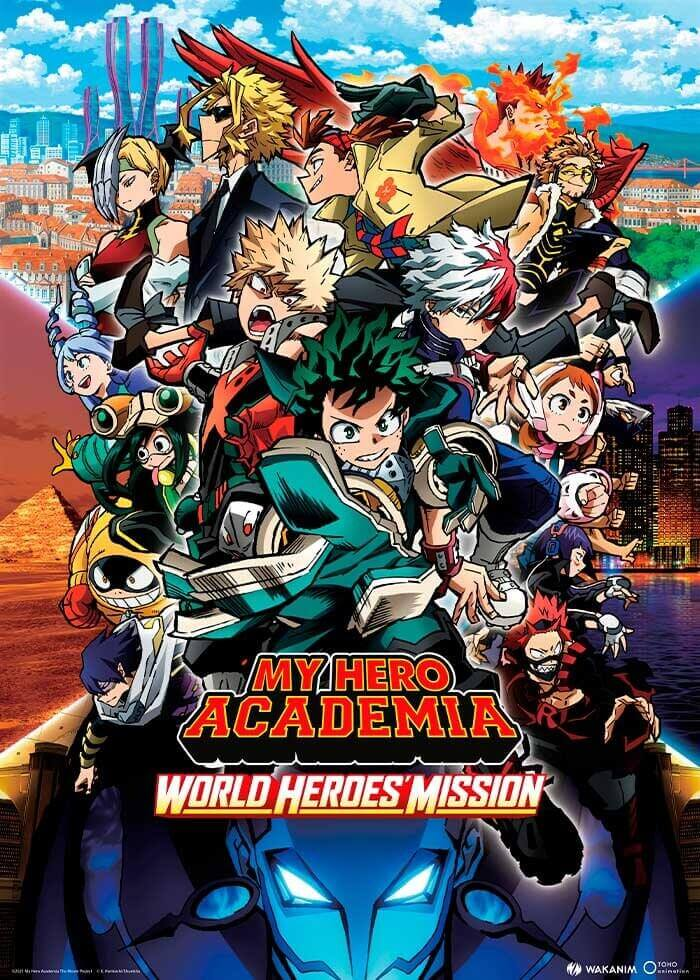

Picture taken by @Admir zekjiri
What is Shonen?
Shounen is a genre in anime and manga that typically has action, comedy, friendship, and has tragedy occasionally.This genre is targeted toward 16-19 year olds, who consitiute a huge share in anime and manga consumption, and happens to be the most popular genre. Several popular anime series, including the “ big 3”: One Piece, Bleach and Naruto belong to this category. The genre of Seinen is targeted for adults( 20 years and above). Several anime series like Tokyo Ghoul, Psycho Pass, Elfen Leid, Black lagoon belong to this genre. This genre is a cocktail of horror, psychological, thriller, tragedy, action, blood and gore and occasional comedy or ecchi. In addition, there are other genres like shoujo(targeted to girls), yaoi(gay), Yuri(lesbian), Parody, ,Isekai, Slice of life, and even "business" which targets the Japanese Salaryman. Majority of the anime or manga aficionados typically like anime in the Shoujo, Shounen, Seinen, Isekai, and Slice of Life categories. However, certain genres like Parody, Yuri and Yaoi also enjoys popularity among its niche audience. -Sandy Praharsha [2021-07-04]
Picture taken by @Kenji Nagasaki
My Hero Academia
The series focuses on Izuku Midoriya, a young man who dreams of becoming a Hero despite being bullied by his violent childhood friend Katsuki Bakugo for lacking a Quirk. Both youths idolize one of the world's greatest heroes All Might, who they both met with Izuku being one of few to know of a critical injury All Might has been concealing from the public eye to maintain morale. All Might also reveals the nature of his Quirk "One For All" and passes it down to Izuku to succeed him after seeing the youth's determination in the face of danger. As Izuku begins his path to becoming a hero in attending U.A. High School (雄英高校, Yūei Kōkō) alongside Bakugo and the friends they make in Class 1-A, a nemesis to the "One For All" users named All For One conditions his apprentice Tomura Shigaraki to destroy the current society and its heroes. (wikipedia 2022)
Picture taken by @Fandom.com
Jujutsu Kaisen
Yuji Itadori is an unnaturally fit high school student living in Sendai. On his deathbed, his grandfather instills two powerful messages within Yuji: "always help others" and "die surrounded by people." Yuji's friends at the Occult Club attract Curses to their school when they unsealed a rotten finger talisman which Yuji swallowed to protect Megumi Fushiguro and their friends, becoming host to a powerful curse named Ryomen Sukuna. Due to Sukuna's evil nature, all sorcerers are required to exorcise him (and by extension, Yuji) immediately. But upon seeing Yuji retaining control over his body, Megumi's teacher Satoru Gojo brings him to the Tokyo Prefectural Jujutsu High School with a proposal to his superiors: postpone Yuji's death sentence and train under Goto until he consumes all of Sukuna's fingers so the Curse can be completely destroyed. At the same time, a group of cursed spirits plot a multi-layered attack on the world of jujutsu sorcery, including the cursed spirit Mahito, whose "Idle Transfiguration" can reshape the soul of any human, and a disgruntled sorcerer named Suguru Geto, who was assumed to have died a year ago. At the exchange event between the Tokyo and Kyoto jujutsu schools, some want Yuji dead immediately, while others side with Gojo to keep him alive. Gojo and Geto failed to protect a young girl from Toji Fushiguro, Megumi's father, an assassin from the Zenin clan. Geto decides the world must be cleansed of non-sorcerers so no more cursed spirits can manifest. The disfigured Kyoto Jujutsu Tech second-year student Kokichi Muta is revealed to be a mole. Geto and the cursed spirits lay a screen over Shibuya. Various sorcerers arrive at the scene to fight them. Gojo fights off cursed spirits and destroys Hanami, but sealed away in Prison Realm. The event also confirms that Geto is death his corpse possessed by an ancient sorcerer named Kenjaku. Yuji and their allies face Kenjaku's forces with both sides suffering losses, Gojo still trapped. As the incident ends, Kenjaku reveals that he has been jumping from body to body for thousands of years and implanted Binding Vows, which in turn awakens thousands of new sorcerers throughout Japan including Tsumiki. He then releases many curses onto Japan, the first step into creating chaos and a world of cursed spirits like the Heian period. In the aftermath, Yuji and Megumi team up with second-year Yuta Okkotsu and Yuki Tsukumo, a special grade jujutsu sorcerer and one of the most powerful sorcerers of all time along with Choso and second-year student Maki Zenin to meet with Tengen. Tengen, an immortal, part-curse part-human jujutsu sorcerer, reveals Kenjaku's plan to merge Tengen's consciousness with Japan's human population. The Culling Game, Kenjaku's all-out war between the sorcerers and curse users of Japan, then begins. (wikipedia 2022)
Picture taken by @IMDB
Hunter x Hunter
The story follows a young boy named Gon Freecss, who was told all his life that both his parents were dead. But when he learns from Kite, an apprentice of his father Ging Freecss, that he is still alive and has since become an accomplished Hunter, Gon leaves his home on Whale Island (くじら島, Kujira Tō) to take the Hunter Examination (ハンター試験, Hantā Shiken) in order to become a Hunter like him.[9][10][11] During the exam, Gon meets and befriends three of the other applicants: Kurapika, the last remaining member of the Kurta clan who wishes to become a Hunter in order to avenge his clan and recover their scarlet-glowing eyes that were plucked from their corpses by a band of thieves known as the Phantom Troupe; Leorio, a prospective physician who, in order to pay for medical school, desires the financial benefits that Hunters receive; and Killua Zoldyck, another twelve-year-old boy who has left his former life as a member of the world's most notorious assassin family.[10][11][3] Among many other examinees, Gon continuously encounters Hisoka, a mysterious and deadly transmuter who takes an interest in him. After many trials together, Gon and his friends end up passing the exam except for Killua, who fails after killing another applicant due to the influence of his brother, Illumi, and runs away to his family's estate in shame. After Gon and the others convince Killua to rejoin their side, Leorio and Kurapika depart temporarily for their own personal reasons, while Gon and Killua set for the Heavens Arena (天空闘技場, Tenkū Tōgijō), a skyscraper where thousands of martial artists compete daily in fighting tournaments, seeking to improve themselves and gain monetary rewards.[12] There they meet Zushi, a fellow Heavens Arena applicant, who has a kung fu master named Wing who trains them in utilizing Nen, a Qi-like life energy used by its practicers to manifest parapsychological abilities, and is also considered to be the final requirement to pass the Hunter Exam. Sometime later, Gon and his friends reunite again in Yorknew City (ヨークシンシティ, Yōkushin Shiti) where they have a clash with the Phantom Troupe. (wikipedia 2022)
sources:
Quora (2021) What is Shounen anime? www.quora.com [2022-03-25]
Wikipedia (2022) My Hero Academia (Premise) en.wikipedia.org [2022-03-25]
Wikipedia (2022) Jujutsu Kaisen (plot) en.wikipedia.org [2022-03-25]
Wikipedia (2022) Hunter x Hunter (plot) en.wikipedia.org [2022-03-25]
audio-sources:
YouTube (2016) 『僕のヒーローアカデミア』ヒロアカ1期ノンクレジットオープニングムービー／OPテーマ：「The Day」ポルノグラフィティ／ヒロアカOP www.youtube.com [2022-03-26]
YouTube (2020) Jujutsu Kaisen - Opening Full『Kaikai Kitan』by Eve www.youtube.com [2022-03-26]
YouTube (2015) Hunter X Hunter Opening 1 www.youtube.com [2022-03-23]